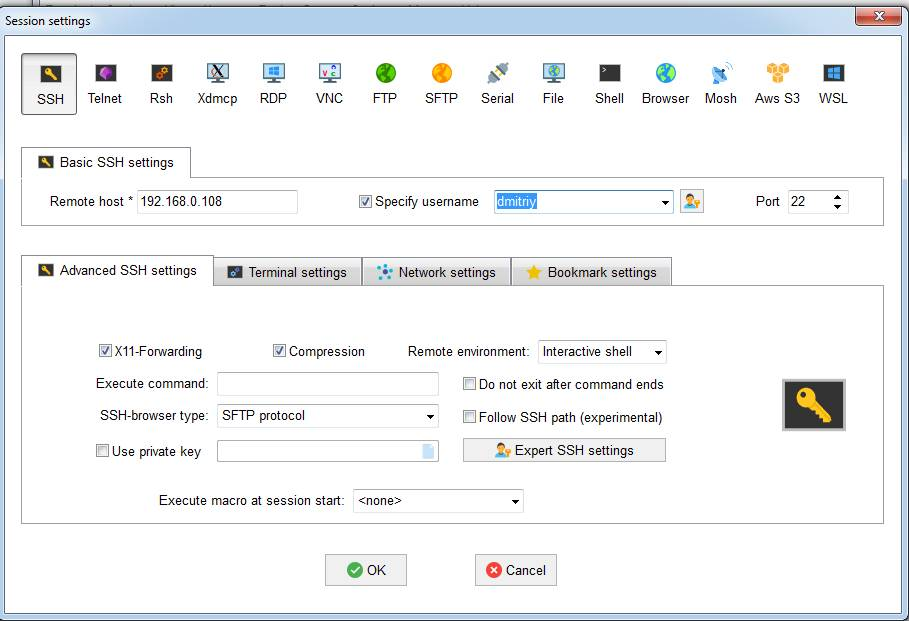

Запуск gazebo через MobaXterm
MobaXterm представляет собой приложение из операционной системы Windows для удаленного подключения к компьютеру и выполнения локально (на компьютере Windows) приложений из удаленного компьютера.
- На windows-компьютер скачиваем zip-архив программы по этой ссылке Скачал на ubuntu, потом через флэшку скопировал на windows.
- Установка. Запустил файл внутри пакета, в процессе установки сообщил, что не нашел файл.dat. Проигнорировал.
- Нажал в правом верхнем углу x server, остановил его.
- Нажал кнопку Session. Заполнил поля host и specify username. Убедился, что X11-Forvarding, галочка стоит.

- Теперь на ubuntu-компьютере:
Установка X11:
sudo apt-get install xauth xfonts-base
Уже было всё установлено.

- nano /etc/ssh/sshd_config
Пустой и в записи запрещён.
Нашел файл /etc/ssh/ssh_config:
sudo chmod ugo+w /etc/ssh/ssh_config
nano /etc/ssh/ssh_config

Который создал (sshd_config), чтобы он не вносил путаницу, удалил.
Перезагрузился.
- Для демонстрации установил X11-приложения:
sudo apt install x11-apps
У меня уже были установлены.
- mobaxterm:

адрес 192.168.0.8 пингуется.
Нашёл ошибку в /etc/ssh/ssh_config, её видно на самой верхней строке на 2 скрине сверху. Исправил её. перезагрузился. Все равно mobaxterm не работает.
04.08.2024
Скачал плагин к mobaxterm, установил. Теперь в mobaxterm появился собственный терминал.
В терминале GNOME дал команду на прослушку порта 8000: nc -l 8000
В терминале Moba команда на передачу сообщений в 192.168.0.108 порт 8000: nc 192.168.0.108 8000
Теперь печатаю текст в терминале Moba, этот текст выводится в gnome. То есть сетевых проблем нет, проблема в чём-то другом.
- Предположил, что все же настройки в ssh-клиенте должны находиться в /etc/ssh/sshd_config.
sudo nano /etc/ssh/sshd_config
Пустой файл. Добавил строки:
host *
X11Forwarding yes
Сохранил, перезагрузил компьютер.
Не помогло.
Пинговал, непонятно причем тут 192.168.0.106.
Проверил через nc, работает.
- 07.08.2024
Вчера понял, что не установлен SSH-server. Сегодня установил:
sudo apt-get install openssh-server
Далее посмотрел: nano /etc/ssh/sshd_config
Полноценный файл и строка X11Forwarding yes была активной.
Перезагрузил его:
sudo systemctl restart ssh
- Далее в mobaxterm снова открыл соединение с 192.168.0.108. Пришлось зачем-то создавать еще master-password. После этого соединение наконец-то установилось.
- Выполнил:
export TURTLEBOT3_MODEL=burger
roslaunch turtlebot3_gazebo turtlebot3_world.launch

Но через минуту соединение сбрасывается и окно с gazebo исчезает.
10.08.2024
В настройках поставил OpenGL=hardware, dpi=auto и газебо держится уже больше 18 минут. При этом все другие программы выключены. Но почему-то карта очень маленьких размеров стала. Нужно разбираться.
Проработал 24 минуты, вырубился только, когда я открыл графический редактор. Не знаю случайно это совпало или нет.
И ещё одна проблема, очень медленный. Нажимаешь на кнопку, проходит наверное секунд 5-10 только, чтобы кнопка активировалась, а действие непонятно вообще происходит, наверное через секунд 20-40.
Возможно из-за того что при каждом соединении с удаленным ubuntu происходит 2 соединения:
И при обрыве соединения эти соединения не удаляются и например если в третий раз устанавливаю соединение, то как бы будет 6 соединений между windows-компьютером и ubuntu-компьютером. Из-за этого мне кажется очень сильно mobaxterm тормозит. Чтобы закрыть эти соединения, нашел способ только с помощью перезагрузки ubuntu-компьютера.